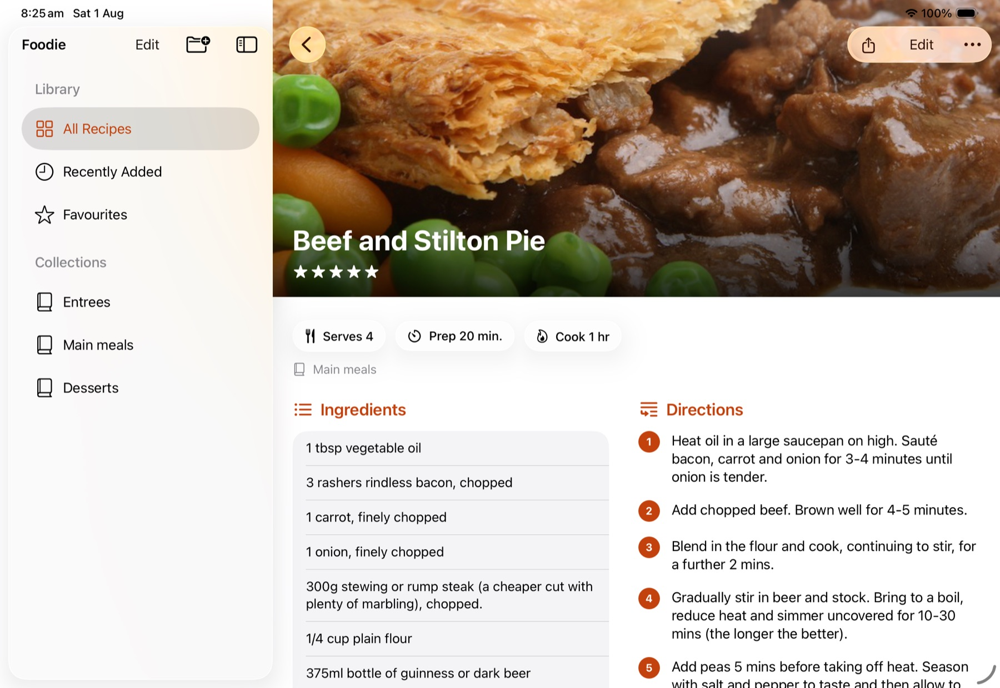
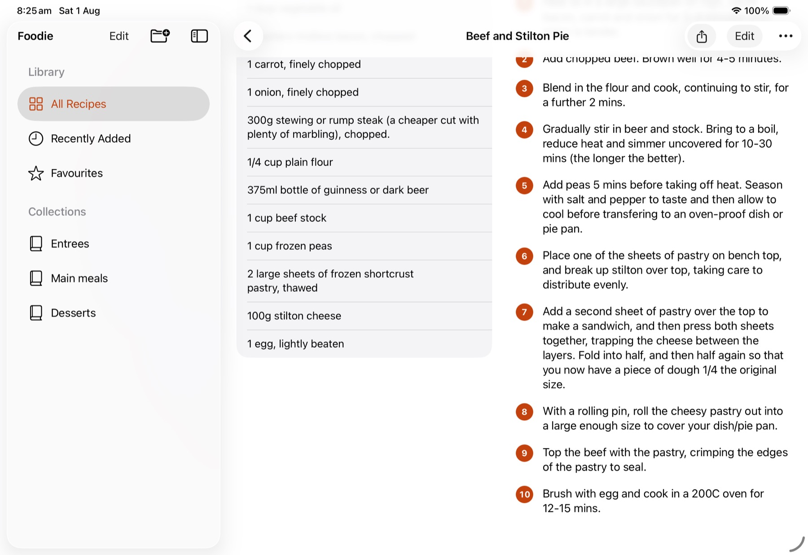
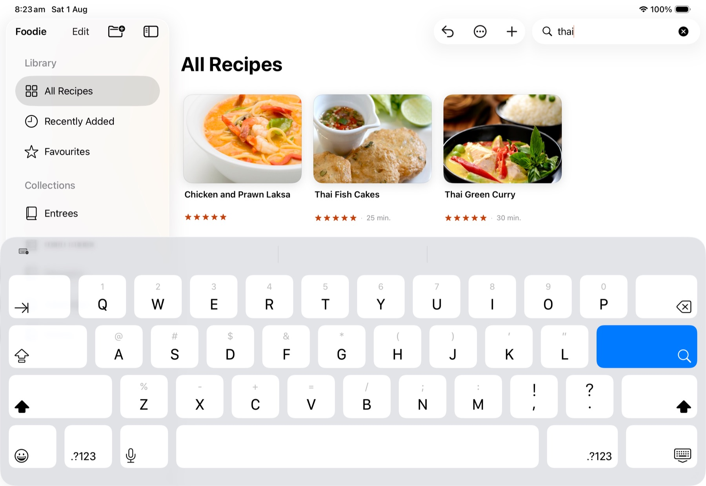
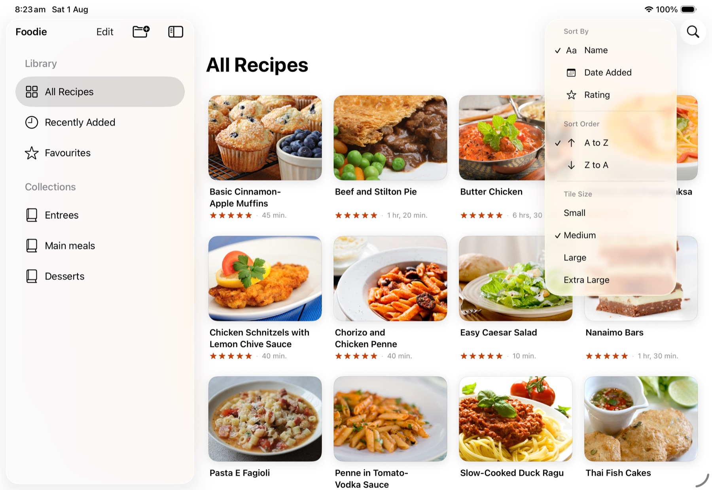
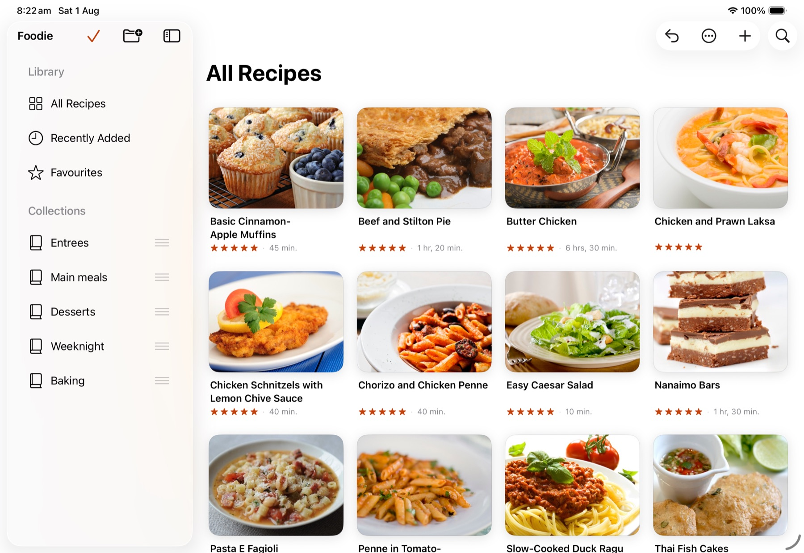
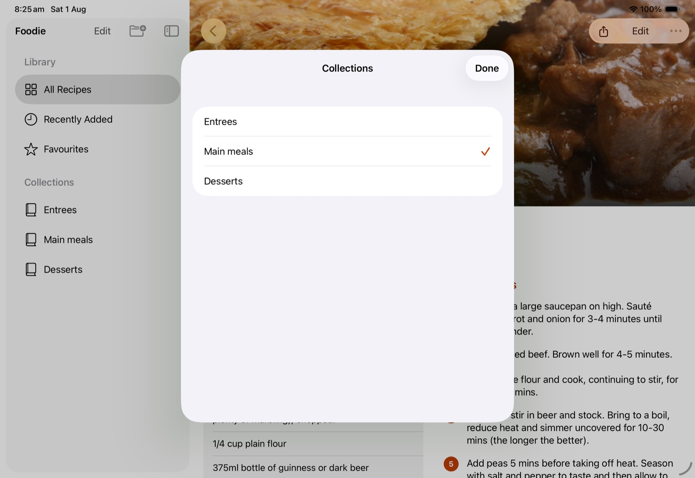
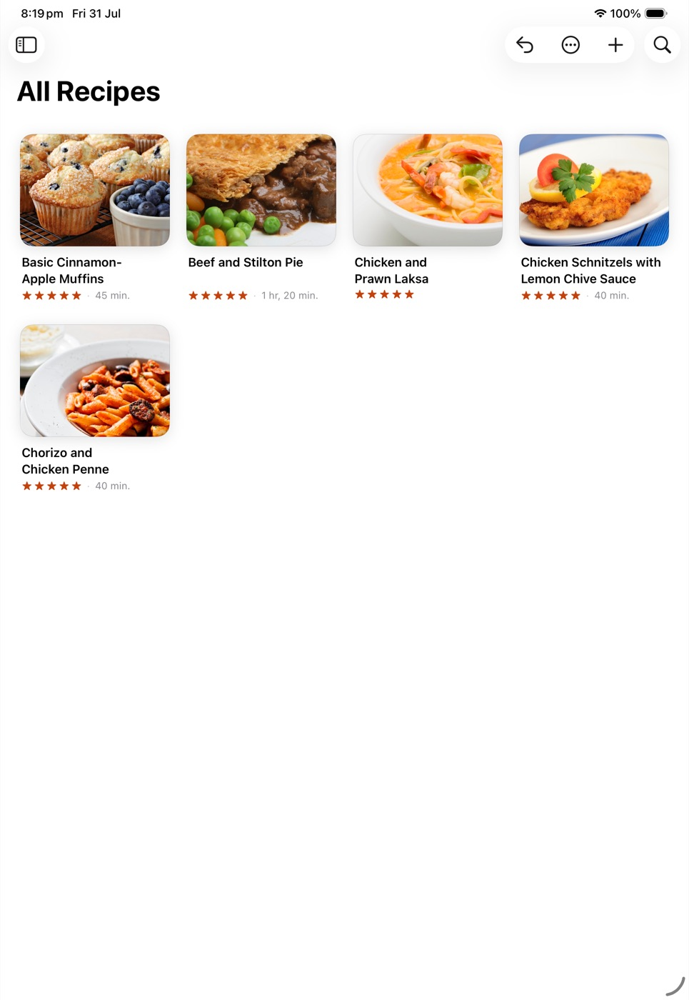
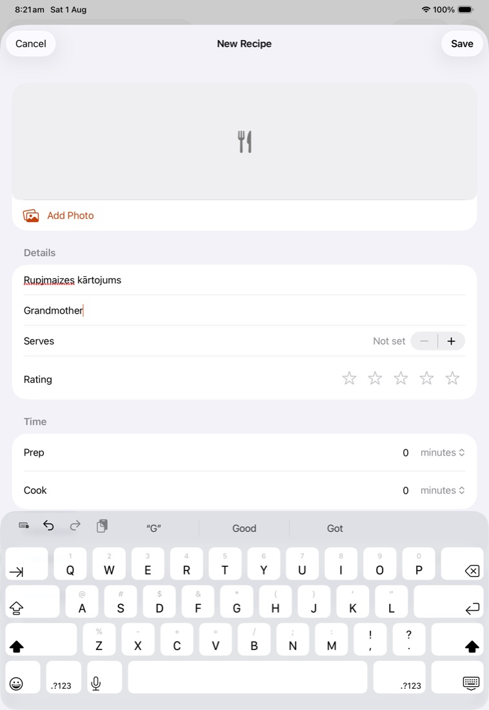

Foodie
Effortless recipe management
All the bells, and all the whistles too.
Manage your own recipes, or import from any website with a couple of taps. Everything is backed up to your iCloud account, and everything can be exported back out. Buy it once — no subscription, and no limit on how much you keep.
The short version
Buy it once. Keep as many as you like. Take them with you.
No limit on recipes
Keep five or five thousand. Foodie sets no cap, so moving a collection you've spent years building costs nothing.
No subscription
One payment and that's it. No yearly renewal, and no features held back behind one.
Nothing is locked in
Export the whole collection to a file whenever you want, photographs and all — to back it up, move it, or take it elsewhere.
Import
Save a recipe while you're browsing
Tap Share in Safari, choose Foodie, and it's in your collection — ingredients, method, photograph and timings. The blog post, the pop-ups and the adverts stay behind.
of recipe pages we tried could be read
came in complete, ingredients and method
of them brought their photo along too
recipe sites we tested it against
Works on sites that block other apps
Foodie reads the page already open in front of you, so sites that turn other recipe apps away still work here.
Old sites as well as new
Recipe sites label their pages two different ways, and most apps read only the newer one. Foodie reads both, so the likes of Nigella and Delia come in cleanly.
The photograph comes too
The picture arrives with the recipe instead of a grey square, sized down so your collection doesn't balloon.
Never comes away empty-handed
If a page can't be read at all you still get the name, the picture and the link. Foodie keeps those in one place to finish off when it suits you.
Tags worth keeping
Recipe pages often arrive with dozens of tags — one we tested had fifty-five. Foodie keeps the useful few and drops the rest. Tags you add yourself are never limited.
Times and servings come through
Preparation time, cooking time and how many it serves all arrive filled in, however the original page worded them.
The recipe
Cook from a page you can read
The photograph fills the top of the screen. Ingredients and steps are laid out as proper lists, in type you can read from across the bench. Tap a collection or a tag to jump somewhere else.
The photograph up top
Each recipe opens on its picture, running the full width of the screen. Foodie looks at the photograph and sets the name in black or white to suit it, so the title is legible whether the shot is a dark casserole or a plate of meringues.

Everything in its place
Ingredients come out as a list you can tick your way down, and the method as numbered steps — properly numbered, even when the original page could not count straight.
- Preparation, cooking and total time, servings and your rating, all in one line
- Collections and tags on the recipe itself, each one tappable
- As many photographs as you like, and you choose which one shows
- Send a recipe to a friend as a file they can simply open

Organise
Collections that mean something to you
Group your recipes the way you actually think about them, rather than the one-size-fits-all approach. Tags arrive with the recipe, and search looks inside the ingredients as well as the names.


Collections
Create one, name it, drag it up or down the list, and drop recipes straight in from the grid. A recipe can belong to several at once, and deleting a collection never deletes the recipes inside it.
Tags worth using
Saved recipes arrive with a few sensible tags, and you can add your own. There is a page listing every tag in your collection, so they are a way of finding things rather than a box to fill in and forget.
Ready-made shortcuts
Recently Added, Favourites and Quick Recipes are always there and always up to date. Nothing to set up, nothing to maintain.
Pictures the size you want them
Pinch to make them bigger, exactly as you would in Photos, or use the slider. Foodie remembers what you chose — so if you like them large, they stay large.
Built for the iPad
The big screen is the point: your collections down one side, your recipes across the rest, and everything within reach. It works properly on the iPhone too, rather than being a phone app somebody stretched.
Two chances before anything goes
Foodie asks before it deletes anything, and then offers to put it back. A recipe you typed in years ago may not exist anywhere else in the world, so it is worth being careful with.



Manage
Write your own
Handwritten cards, family recipes, things you worked out yourself. Type in the name, the ingredients and the method, add a photograph, and it sits alongside everything else. Only the name is required.
Cancel discards your changes and nothing else. Unsaved work is never lost by accident.
- Several photographs per recipe, and you choose the cover
- Star ratings, to sort and filter by later
- Preparation time, cooking time and servings
- Start a recipe inside a collection and it lands there

Sync
Up to date on every device you own
Your recipes go into your own iCloud account and appear on your iPad and iPhone by themselves. No account to create, nothing to configure — and you can take the whole collection out again whenever you want.
Sync that needs no setting up
Add a recipe on the iPad and it is on the iPhone. No sign-in, no pairing, no switches — and it tells you in plain words when it last backed everything up.
Works without the internet
Every recipe is on the device itself, so a dropped connection changes nothing. Foodie mentions quietly that it cannot reach iCloud, and catches up when the wi-fi returns.
Export the whole collection
Everything you have to a single file, photographs included — to keep somewhere safe, or to load back onto another iPad. It reads its own files back in, so the door opens both ways.
Pass a recipe on
Send one recipe to somebody by email or message. They tap it, and it drops straight into their own collection.
A way back from a bad day
On the rare day something goes properly wrong, Foodie can reach in, find your recipes and put them back where they belong.
Undo, and a second chance
Foodie asks before it deletes anything, then offers to put it back afterwards — because a recipe you typed in years ago may not exist anywhere else.
Accessibility
Readable across the kitchen
A recipe is read at arm's length, in poor light, by someone whose hands are busy. Foodie is built for that.
Turn the text right up
Set the type as large as iPadOS allows and Foodie rearranges to suit — fewer recipes across the screen, names shown in full, nothing running off the edge.
Dark mode
The whole app in dark tones for cooking at night, with the step numbers and ingredient lists just as clear as they are by day.
Read aloud, if you would rather
Every part of a recipe can be spoken by VoiceOver — the ingredients, the steps, the times — so you can keep cooking without looking at the screen at all.
On the way
What we're building next
Foodie isn't finished. These are the next things being built, and they arrive as free updates.
Cooking mode
One step at a time in big type, with the screen staying awake and your place kept. Tap a time in the method and a timer starts.
Scale a recipe
Change the number of servings and every ingredient follows. Cooking for four when it was written for six stops being mental arithmetic.
Metric and imperial
Convert between cups, grams and ounces as you cook — the thing we already know how to do rather well.
Shopping lists
Send a recipe to a list that merges the duplicates, sorts itself by aisle, and can go straight into Reminders.
Bring your library across
Importers for Paprika and Mela, so switching means moving what you already have rather than starting again.
Scan a cookbook
Photograph a page from a book or open a PDF, and get a recipe you can search, scale and cook from.
Further out: meal planning, a shared cookbook for the household, notes on what you changed last time, an Apple Watch app, a Mac version, and Siri shortcuts for saving a recipe by voice.
In context
How recipe apps usually work
| App | How you pay | Free limit | Where it backs up |
|---|---|---|---|
| Foodie | Once | No limit | Your iCloud account |
| Deglaze | Yearly subscription | A few saves a week | Their computers |
| Pestle | Subscription, or once | About 15 recipes | Their computers |
| Crouton | Once, plus a subscription for some parts | About 20 recipes | Your iCloud account |
| Mela | Once, per device type | Yes | Your iCloud account |
| Paprika 3 | Once, up front, per device type | None | Their computers |
They are all decent apps. The difference is where your recipes live: an app that keeps them on its own computers has a bill arriving every month and passes it on to you. Foodie keeps them on your iPad and in your own iCloud account, so there is no bill to pass on.
Availability
In development.
Foodie is being finished now, for iPad and iPhone on iOS 26, with Mac to follow. If you would like to hear when it lands, write to us.